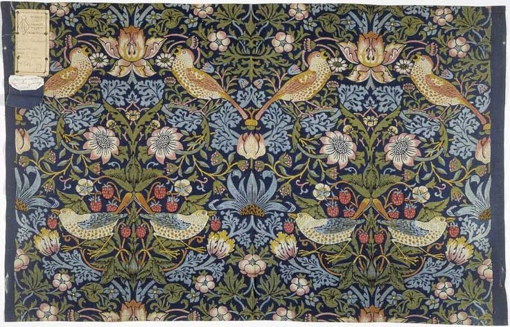
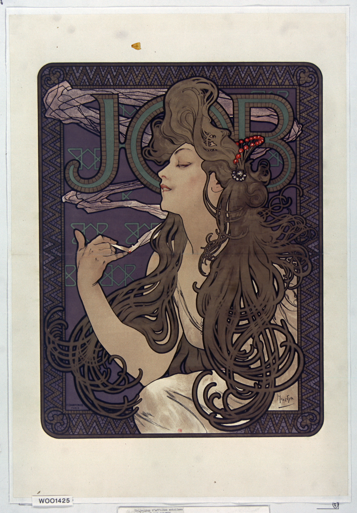
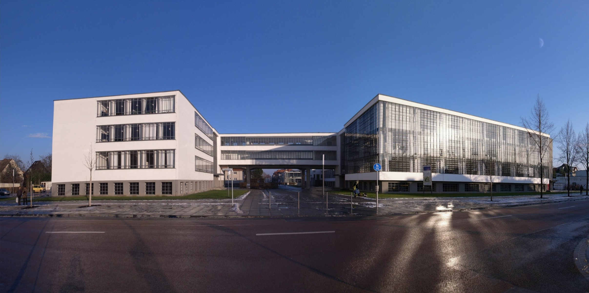
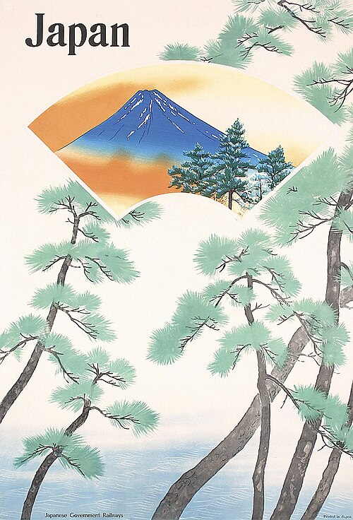
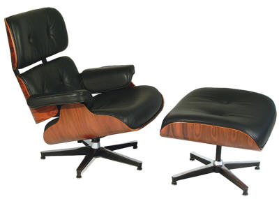
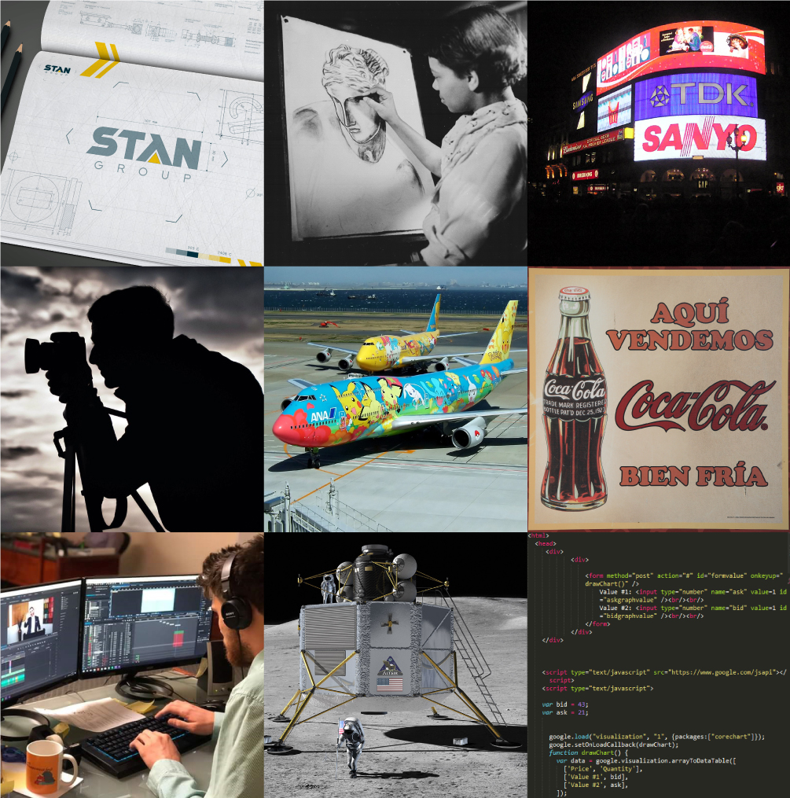

The Industrial Revolution & Early Design Reform

Context
Before the Industrial Revolution, most objects were made by hand. Industrialization shattered that model — factories produced goods at unprecedented scale, but the results were often aesthetically chaotic. Ornament was applied indiscriminately and cheap imitations of handcrafted luxury flooded the market.
The Great Exhibition of 1851
The Crystal Palace exhibition in London was a watershed moment. It showcased industrial manufacturing to the world but also laid bare the problem: rooms full of over-decorated, poorly designed machine-made goods. Critics like Henry Cole and Owen Jones began arguing that industrialization demanded a new design sensibility — one suited to the machine rather than awkwardly imitating the hand.
Key Figures
- John Ruskin — argued the division of labor degraded both worker and work
- Henry Cole — pushed for design education and industrial standards
- Owen Jones — advocated for new principles of ornament suited to the machine age
- Joseph Paxton — designed the Crystal Palace
Can you identify a modern technology that has created a similar "crisis of taste" — where capability outpaced design sensibility? How does that compare to what happened during industrialization?
Arts & Crafts Movement

The First Design Reform Movement
Led by William Morris — artist, writer, socialist, and designer — the Arts & Crafts movement rejected the factory system entirely and championed a return to hand production, honest materials, and the medieval guild model. The goal was not mere decoration but an integrated approach to living.
Key Figures
- William Morris — designer, writer, socialist who championed handcraft across media
- John Ruskin — critic and theorist who argued for the moral dimensions of making
Morris believed handcraft was morally superior to machine production, yet his objects were too expensive for ordinary people. Is this contradiction fatal to the movement's ideals, or does the underlying principle still hold value today?
Art Nouveau

The Organic International Style
Where Arts & Crafts looked backward to medieval craft, Art Nouveau looked sideways — to nature, to the organic, to the sensuous curve. It was the first truly international modern style, appearing across Europe under different names: Jugendstil in Germany, Stile Liberty in Italy, Modernisme in Catalonia.
Art Nouveau aspired to Gesamtkunstwerk — the total work of art — where architecture, furniture, lighting, and decorative detail formed a single unified vision.
Key Figures
- Alphonse Mucha — defined the movement's graphic language
- Hector Guimard — iconic Paris Métro entrances
- Antoni Gaudí — architecture as biology in Barcelona
- Louis Comfort Tiffany — stained glass and decorative arts in America
Art Nouveau proved that new industrial materials could produce beauty rather than just function. Where do you see contemporary designers using new technologies (3D printing, parametric design, AI) to create beauty rather than just efficiency?
Early Modernism & the Avant-Garde

The Age of Rupture
World War I, political revolution, rapid urbanization, and technological acceleration created a sense that the old world had been swept away. Artists and designers responded with radical new visual languages that deliberately broke with tradition.
The Functionalist Turn
Across these movements, a common thread: design should be rational, stripped of ornament, and determined by purpose. "Form follows function" became the unofficial slogan. Decoration was not just unnecessary — it was dishonest. These movements established the visual vocabulary of modernism and the idea that design could reshape how people live.
Key Figures
- Filippo Tommaso Marinetti — launched the Futurist manifesto in 1909
- Alexander Rodchenko — bold Constructivist graphic work and photography
- El Lissitzky — geometric abstraction bridging art and political messaging
- Piet Mondrian — reduced painting to primary colors and black lines
- Gerrit Rietveld — translated De Stijl principles into furniture and architecture
The avant-garde believed design could be a tool for social transformation. Do you think design still has that power today, or has it become primarily a commercial activity? What examples support your view?
Bauhaus

More Than a School
The Bauhaus was the most influential design institution of the twentieth century. Founded by Walter Gropius in Weimar, it set out to dissolve the boundaries between fine art, craft, and industrial production. Its revolutionary teaching model — the Vorkurs preliminary course in color, form, and materials — produced designers who could think across disciplines.
Lasting Impact
Geometric clarity, functional simplicity, honest use of modern materials — steel, glass, concrete. When the Bauhaus closed, its faculty scattered to the United States, carrying its ideas into American design education, architecture, and industry. The school lasted only fourteen years, but its influence is incalculable.
Key Figures
- Walter Gropius — founder; unified art, craft, and technology
- Hannes Meyer — second director; socially oriented functionalism
- Ludwig Mies van der Rohe — third director; architecture focus
- László Moholy-Nagy — photography, typography, and the preliminary course
- Herbert Bayer — graphic design and universal typeface
- Wassily Kandinsky — color theory and abstract painting
The Bauhaus lasted only 14 years but reshaped design education worldwide. What made its teaching model so influential, and how do you see its DNA in the way design is taught today?
Art Deco

Glamour, Geometry, and Modernity
Art Deco emerged alongside modernism but took a different path. Where the Bauhaus sought purity and social purpose, Art Deco embraced glamour, luxury, and spectacle. It drew from diverse sources — Egyptian archaeology, Aztec geometry, African art, Cubism — and fused them into a style of confident, angular elegance.
Key Figures
- Tamara de Lempicka — painter whose sleek, angular portraits defined Art Deco's glamour
- A.M. Cassandre — revolutionary poster designer (Normandie, Dubonnet, Nord Express)
- William Van Alen — architect of the Chrysler Building, New York
- Émile-Jacques Ruhlmann — master furniture maker using exotic materials and geometric forms
- René Lalique — glass and jewelry designer; frosted glass became an Art Deco signature
- Paul Poiret — fashion designer who brought Art Deco aesthetics to haute couture
Art Deco and Bauhaus were contemporaries with opposite philosophies — glamour vs. austerity. Which approach do you find more compelling as a response to modernity, and why might both have been necessary?
Mid-Century Modern

Post-War Optimism and Democratic Design
New materials (plywood molding, fiberglass, plastics), new manufacturing techniques, and broad cultural optimism. Good design should be available to everyone. Clean lines, organic curves, minimal ornamentation, and a celebration of new materials define this era.
Key Figures
- Charles & Ray Eames — furniture, films, exhibitions, toys — democratic modernism
- Eero Saarinen — sweeping architectural forms (TWA Terminal, Gateway Arch)
- Arne Jacobsen — Egg and Swan chairs; Scandinavian organic modernism
- Dieter Rams — ten principles of good design; shaped Braun electronics
- Alvar Aalto — Finnish furniture and architecture blending warmth with function
- Hans Wegner — Danish chair master; "The Chair"
Mid-Century Modern promised "good design for everyone." Did mass production deliver on that promise, or did it create new problems? Think about IKEA — is it the fulfillment of this ideal or a compromise?
Postmodernism

"Less Is a Bore"
By the 1970s, modernism's dominance had produced a backlash. Postmodern design embraces color, pattern, historical reference, humor, irony, and contradiction. It rejects the idea of a single correct solution in favor of multiple, coexisting approaches.
Key Figures
- Robert Venturi — Complexity and Contradiction in Architecture; "Less is a bore"
- Ettore Sottsass — founded the Memphis Group in Milan, 1981
- Michael Graves — mixed classical references with cartoon color (Portland Building, Alessi kettle)
- April Greiman — layered, deconstructed graphic design
- Wolfgang Weingart — pushed Swiss typography into experimental territory
- David Carson — near-illegible layouts for Ray Gun magazine
Postmodernism argued there is no single "correct" design solution. Has this idea liberated designers or made the field more chaotic? How do you navigate between personal expression and clear communication in your own work?
Digital Revolution & Contemporary Design

The Screen as Design Surface
The personal computer, the internet, and the smartphone transformed design more than any development since the printing press. UX and UI emerged as distinct disciplines. The visual landscape cycled rapidly from skeuomorphism to flat design to material design to today's comprehensive design systems.
AI tools can now generate layouts, images, and even entire interfaces. If a machine can design, what is the designer's role? How does this echo the same question the Industrial Revolution posed about craft?
Patterns & Perspectives
Recurring Themes
Looking across these periods, several patterns emerge. Nearly every movement defined itself against its predecessor — action and reaction. New materials and tools don't just enable new forms; they demand them. The tension between universalism and pluralism runs throughout: modernism sought universal solutions while postmodernism celebrated difference.
Perhaps the deepest thread is design as ethics. From William Morris onward, the best design thinkers have insisted that choices about form, material, access, and production have moral dimensions. The history of design is not a story of steady progress — it is a conversation, ongoing, contentious, and vital, about how we shape the world we live in.
Looking across all the periods you've studied, which recurring pattern — action/reaction, technology as catalyst, universalism vs. pluralism, or design as ethics — do you think is most relevant to the next decade of design? Why?